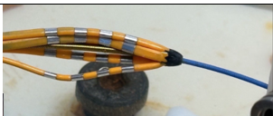
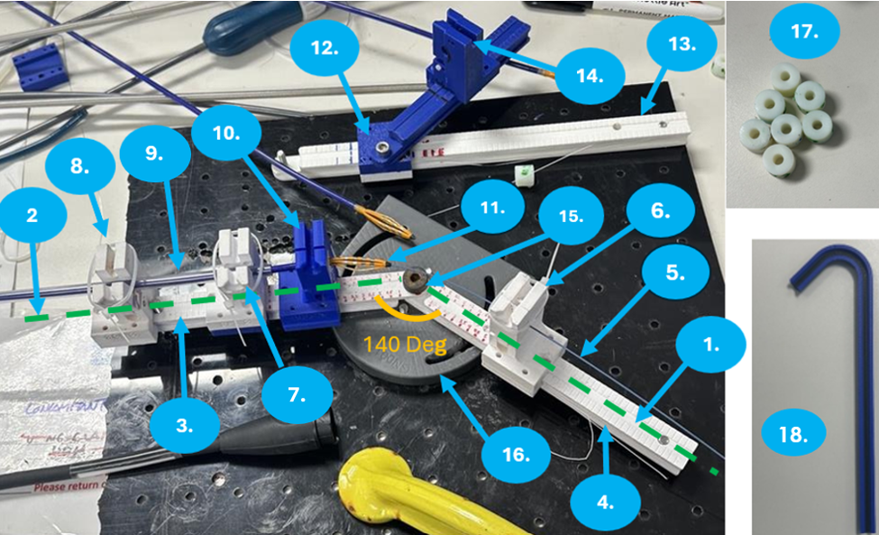

Mission
Investigate physician-reported catheter deformation in the catheter system under simulated clinical use conditions.
Problem
Spline deformation was observed during catheter deployment and manipulation. The investigation needed to determine which use-condition and device-interface factors contributed most strongly to deformation risk.
What is Spline Deformation?
Spline deformation occurs when portions of the catheter basket deform or fold inward during deployment. Changes in basket geometry can affect device behavior and were therefore investigated as part of this study.
Why It Matters
- Basket geometry affects catheter performance.
- Deformation can influence deployment consistency.
- Understanding contributors helps improve future designs.
Approach
Designed and fabricated test fixtures to simulate sheath curves, guidewire stiffness, deployment paths, and clinical handling conditions. Used structured testing to compare how different inputs affected spline deformation behavior.
Key Findings
Stiffer guidewires increased deformation risk. Smaller or more aggressive sheath curves increased spline loading. Deployment path and device-interface conditions influenced catheter deformation behavior, while fixture-based testing helped isolate mechanical contributors under repeatable conditions.
Outcome
Identified the strongest contributors to spline deformation and generated test evidence to support future design decisions, risk assessment, and verification planning.
Catheter / Spline Interface Overview

Close-up view of the catheter basket structure used to explain how guidewire and sheath conditions can influence spline loading, deformation, and catheter deformation behavior during deployment.
Test Setup
To investigate catheter deformation, a modular benchtop setup was developed to simulate different guidewire and sheath conditions under controlled, repeatable test conditions.

Purpose & Variables Tested
The setup was built to rapidly test primary, secondary, and contributing factors influencing catheter deformation using one adjustable fixture. It allowed the team to reproduce earlier guidewire-related findings and further investigate sheath-related variables.
Variables Tested
- Guidewire stiffness
- Sheath angle
- Curve size
- Curve straight section
- Tip inner diameter
- Tip material
Numbered Fixture Components
Numbers correspond to the callouts in the setup image.
- 0° Axis
- 40° Axis
- Sheath Angle Arm
- Guidewire Angle Arm
- Guidewire — Amplatz Super Stiff 0.035"
- Guidewire Clamp
- Sheath Clamp A
- Sheath Clamp B
- Fixed Tube
- 3D Printed Tip Clamps
- Catheter
- Sliding Piece to Change Sheath Angle
- Track for Sliding Piece
- Sheath Clamp C
- Pivot Point
- Setup Dial
- 3D Printed Tips
- 3D Printed Curved Tracks
Test Workflow
The investigation translated a clinical observation into controlled benchtop testing and design recommendations.